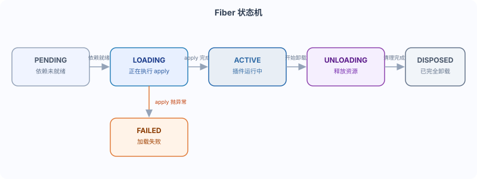

DeepSeek Harness plugin lifecycle: Fiber state machine
In previous chapters, we have already registered listeners, registered tools, and writtenctx.effect()。
Have you ever wondered: at what exact moment does a plugin start "running", and at what exact moment does it start "unloading"?
This section introduces the Cordis plugin model and the lifecycle state machine, i.e.Fiber state machine。
What is Fiber
Every loaded plugin has aFiberScope.
Fiber can be understood as the execution unit of a plugin instance; it carries all the state of the plugin from declaration, loading, and running to unloading.
Through Fiber, the framework knows what stage a plugin is currently in and what can be done next.
Fiber: a state container for a plugin instance in the Cordis runtime.
It records the lifecycle state of the plugin and is also the basis for cleaning up registrations upon unloading.
Fiber state machine
Fiber states transition in the following order, describing the complete lifetime of a plugin from loading to unloading.

The main path isPENDING → LOADING → ACTIVE → UNLOADING → DISPOSED。
If apply throws an exception during the LOADING stage, it entersFAILED。
| State | Meaning | When it occurs |
|---|---|---|
| PENDING | Declared, but required dependencies are not ready | The plugin has been added to the context, and the inject services are not ready yet. |
| LOADING | Dependencies are ready, and apply is being executed. | All required services are ready, and the framework calls apply(ctx). |
| ACTIVE | Plugin running | apply returns normally, registration takes effect |
| FAILED | apply throws an exception | An error is thrown during apply execution, and loading fails. |
| UNLOADING | Plugin is unloading and releasing resources | Dependencies disappear, get disposed, or HMR triggers unloading. |
| DISPOSED | Completely uninstalled | All disposers have been executed |
Terminology: inject is a field where the plugin declares its required service dependencies. The framework waits until all these services are ready before executing apply.
Dependency-driven loading
A plugin that declares inject waits for all required services to be ready before entering LOADING.
If a dependent service never appears, the plugin stays in PENDING and will not execute apply.
Example
// Declare that this plugin requires the tools and llm services; apply will not execute until both are ready.
export const inject = ['tools', 'llm']
export function apply(ctx: Context) {
// When execution reaches this point, ctx.tools and ctx.llm must already be ready.
// You can safely register tools and read model configuration.
}
This is how Cordis uses service dependencies to express loading order, rather than manually orchestrating a startup sequence.
Automatic cleanup mechanism
Any registration made through ctx will be automatically revoked when the plugin unloads.
This is the fundamental reason why dsh can "clean up after itself", and also the prerequisite for hot replacement to take effect safely.
| Register Operation | Cleanup on unload |
|---|---|
| ctx.on(event, handler) | Event listeners are automatically removed |
| ctx.tools.register(tool) | Automatic removal of tool registration |
| ctx.llm.registerAdapter(names, adapter) | Automatic removal of LLM adapter registration |
| ctx.effect(() => cleanup) | The returned disposer is executed upon unloading |
Among them, ctx.effect is used to manage custom resources that have no ready-made "registry" to track, such as network connections.
The invocation order of disposers
When a plugin unloads, disposers are invoked in the reverse order of registration.
Multiple async disposers execute concurrently; there is no guarantee that they finish one by one.
Cleanup steps with order dependencies must be placed into the same disposer returned by ctx.effect(), and that disposer is responsible for serial waiting.
For example, if you register effects A and B in sequence, upon unloading, B's disposer is called first, then A's disposer.
If B's cleanup must wait for A's cleanup to complete, both steps must be written into the same effect.
Hands-on example: observe state transitions
The official documentation uses the following minimal plugin to demonstrate the loading and unloading logs.
Example
// Use console.log to print lifecycle events, observe the order of apply and effect
export function apply(ctx: Context) {
// apply is called: the plugin transitions from LOADING to ACTIVE
console.log('runoob plugin loading')
// Register an effect: the returned cleanup function is executed on unmount
ctx.effect(() => {
// Effect registration complete (apply still in progress)
console.log('runoob effect registered')
// Return disposer: called when the plugin is unloaded
return () => console.log('runoob effect cleaned up')
})
}
Output on load:
runoob plugin loading runoob effect registered
Output on unload:
runoob effect cleaned up
It can be seen that apply executes first, then the effect registration is executed, and the returned disposer is called during the unloading phase.
Summary self-test
The Fiber state machine describes the six states of a plugin from declaration to complete unloading; disposers clean up registrations asynchronously and concurrently in reverse registration order.
Test yourself:
- What are the six states of Fiber? Which state does it enter when apply throws an exception?
- Why don't listeners registered via ctx.on require manual removeListener?
- If two cleanup steps have order dependencies, how should they be written to be safe?